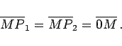
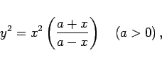
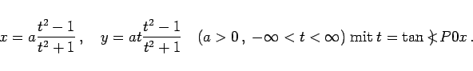
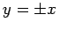
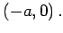
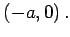
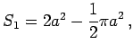
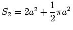

Die Strophoide ist der geometrische Ort aller Punkte P1 und P2, die auf einem beliebigen Strahl durch den Punkt A liegen (A liegt auf der negativen x-Achse) und für die gilt
|  | (2.219) |
Dabei ist M der Schnittpunkt des Strahles mit der y-Achse.
Die Gleichung der Strophoide in kartesischen und Polarkoordinaten sowie in Parameterform lautet:
|  | (2.220a) |
 |
(2.220b) |
|  | (2.220c) |
Der Koordinatenursprung ist ein Doppelpunkt mit den Tangenten . Die Asymptote hat die Gleichung  , und der Scheitel A liegt bei 
, und der Scheitel A liegt bei 
Der Flächeninhalt der Schleife beträgt  der Flächeninhalt zwischen der Kurve und der Asymptote .